Targówek ul. Zamkowa, os. Wilno
- mieszkanie 60,5 m2
- 3 pokoje z aneksem kuchennym
- duża loggia 3,3 m2
- mieszkanie bardzo zadbane
Mieszkanie 3-pokojowe, o powierzchni 60,5 m2 z dużą loggią , zlokalizowane w 3-piętrowym bloku z 2011 roku na kameralnym i nowoczesnym osiedlu Wilno w dzielnicy Targówek. Mieszkanie w pełni wykończone i umeblowane, gotowe do zamieszkania bez dodatkowych nakładów finansowych. Osiedle posiada własną stację kolejową oraz linię autobusową. Bardzo dobre zaplecze handlowo - usługowe, na osiedlu liczne sklepy (m.in. Carrefour Express, Żabki, piekarnie), salony kosmetyczne i fryzjerskie, punkty usługowe, alejki, fontanny i place zabaw.
Pełna własność z księgą wieczystą >> możliwość zakupu na kredyt
Czynsz: 1050 zł ze wszystkimi zaliczkami na media (dodatkowo płatny tylko prąd)
Dostępność: do ustalenia
MIESZKANIE:
- dokładny metraż: 60,3 m2
- piętro 0 w 3 piętrowym bloku z windą
- ekspozycja okien: pólnoc i zachód
- okna plastikowe, drzwi antywłamaniowe
- stan mieszkania: bardzo dobry, mieszkanie zadbane, wykończone w uniwersalnej kolorystyce, gotowe do wprowadzenia po odświeżeniu ścian
- AGD: płyta indukcyjna, lodówka, zamrażarka, okap, piekarnik, zmywarka, pralka
- podłogi: panele i gres
MIESZKANIE SKŁADA SIĘ Z:
- pokoju dziennego z aneksem kuchennym 24,1 m2
- sypialni 12,6 m2
- sypialni 10,2 m2
- łazienki 5,1 m1
- przedpokoju 8,3 m2
BALKON:
jest duży balkon typu loggia 3,3 m2
GARAŻ:
do lokalu przynależy miejsce parkingowe w garażu podziemnym (płatne dodatkowo + 50 tys. zł, zakup obligatoryjny)
POMIESZCZENIE GOSPODARCZE:
Do mieszkania nie przynależy komórka lokatorska
Do dyspozycji mieszkańców jest rowerownia i wózkownia.
OSIEDLE I BUDYNEK:
Wyjątkowo ładne, estetyczne i zadbane osiedle przypominające małe miasteczko z licznymi restauracjami, kawiarniami, sklepikami i alejkami spacerowymi
- rok budowy: 2011
- wejście do klatek zabezpieczone videodomofonem, monitoring, ochrona, teren ogrodzony
- budynek 3-piętrowy
- niska zabudowa mieszkalna i jasne elewacje
- renomowany deweloper: Dom Development
LOKALIZACJA:
Warszawa, Targówek, os. Wilno, ul. Zamkowa - kameralne i ciche osiedle z jednoczesną bliskością komunikacji i zaplecza handlowego.
- KOLEJ: własny przystanek kolejowy Zacisze – Wilno 600 m od budynku
- AUTOBUS: przystanki autobusowe 400 m od budynku
- METRO: stacja metra dworzec Wileński 13 min komunikacją (bezpośredni dojazd koleją do metra)
W bliskiej okolicy osiedla szkoły, przedszkola, żłobki, punkty handlowe i usługowe, galerie handlowe (m.in. Galeria Wileńska 13 min komunikacją), kawiarnie i restauracje.
STAN PRAWNY:
- pełna własność z księgą wieczystą
- grunty uregulowane
- możliwość zakupu na kredyt
CZYNSZ:
- 1050 zł ze wszystkimi zaliczkami na media
- dodatkowo płatny tylko prąd
Masz pytania lub chcesz obejrzeć mieszkanie?
Zadzwoń już dziś i umów się na prezentację!
Beata Lech
Doradca ds. Nieruchomości
Tel. 724 106 333
Oferta wysłana z programu dla biur nieruchomości ASARI CRM ()
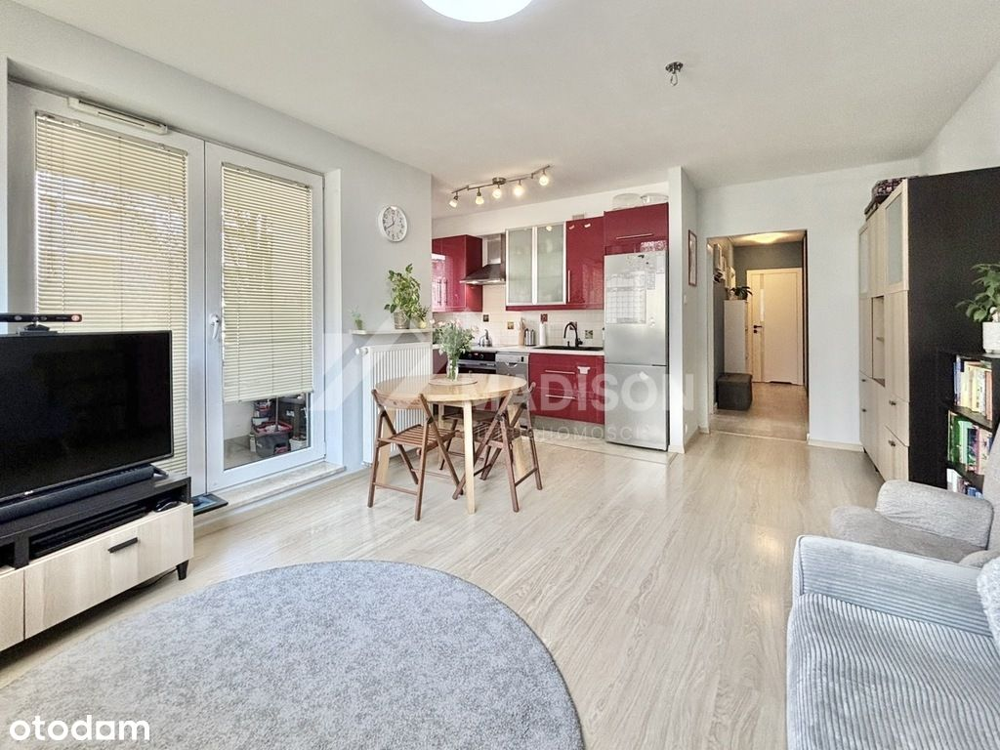
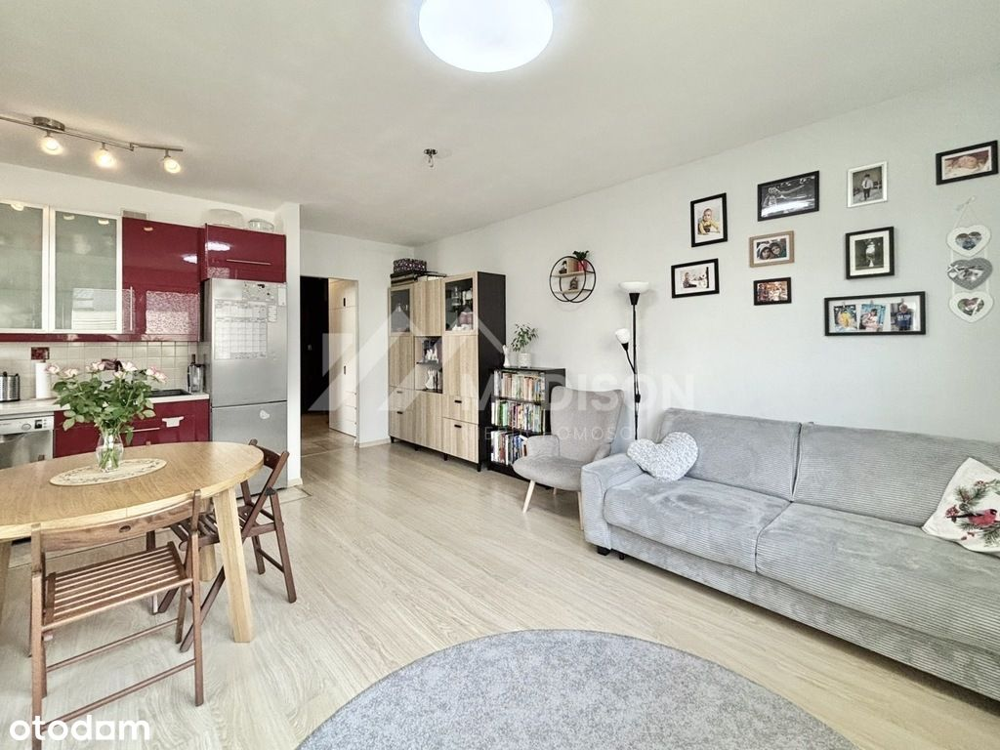
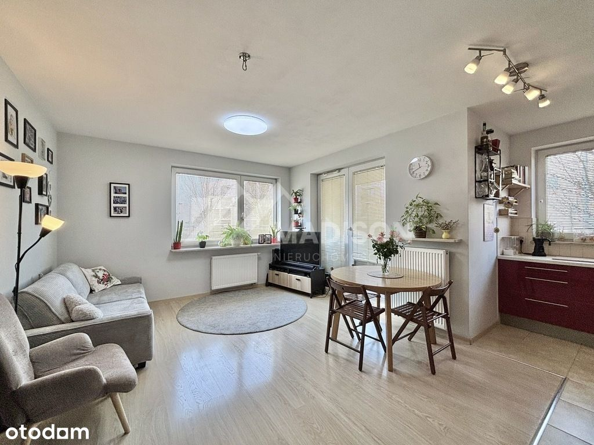
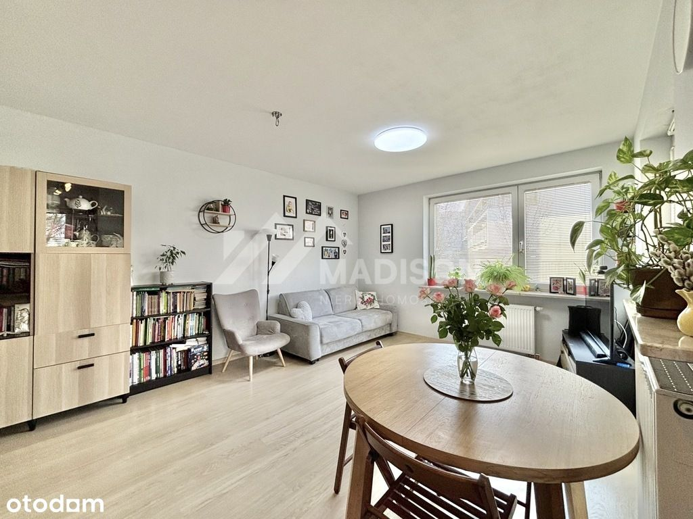
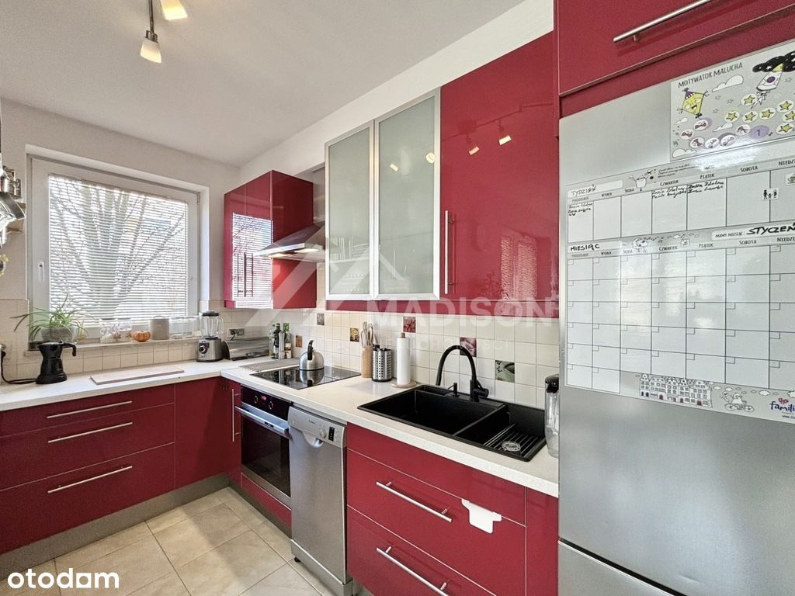
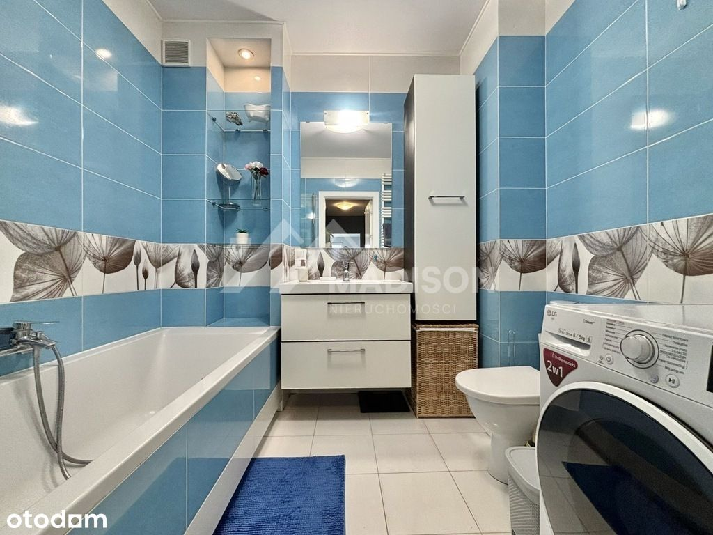
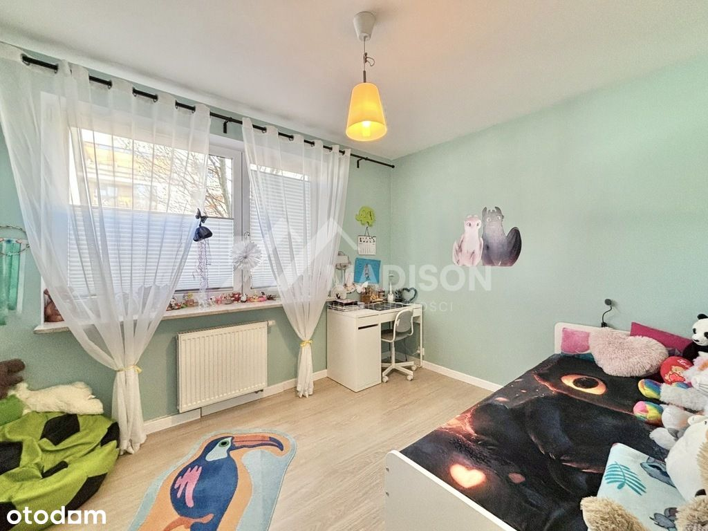
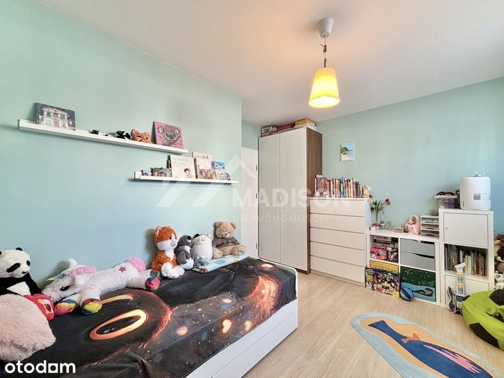
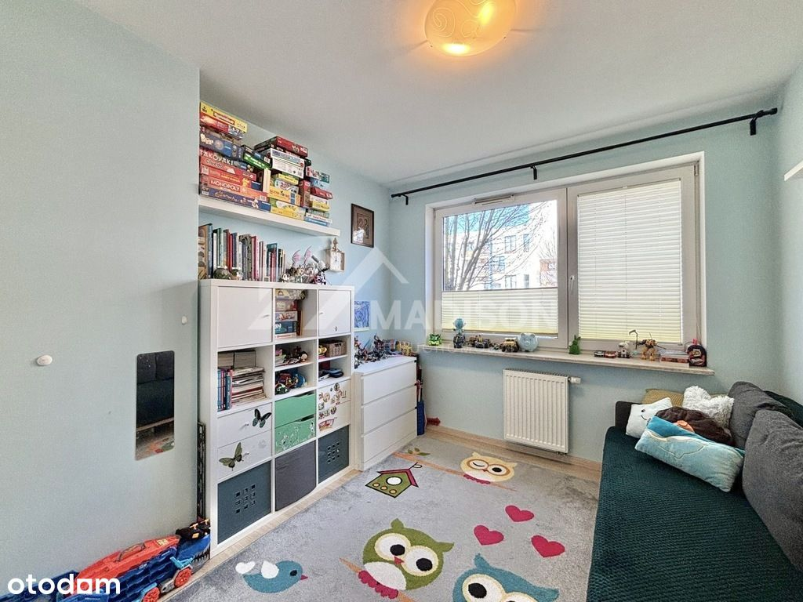
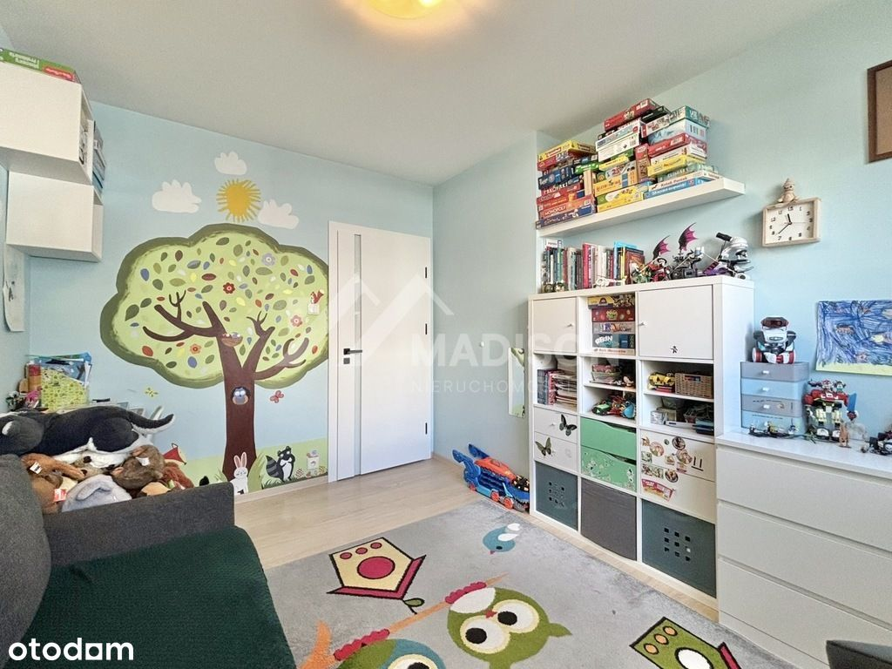
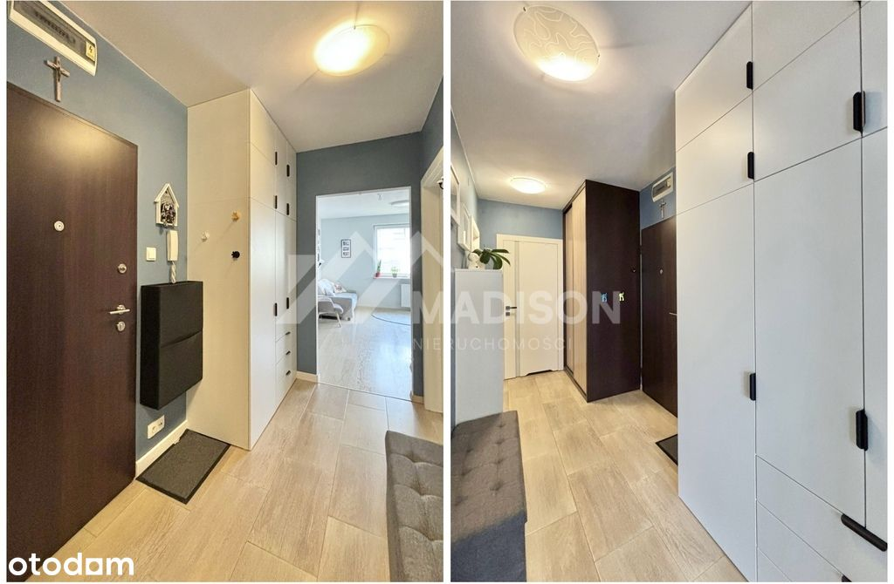
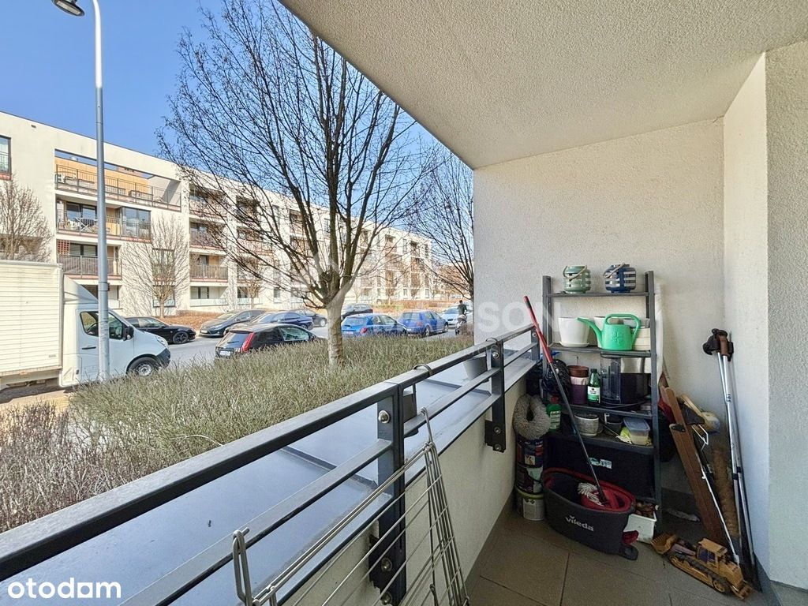
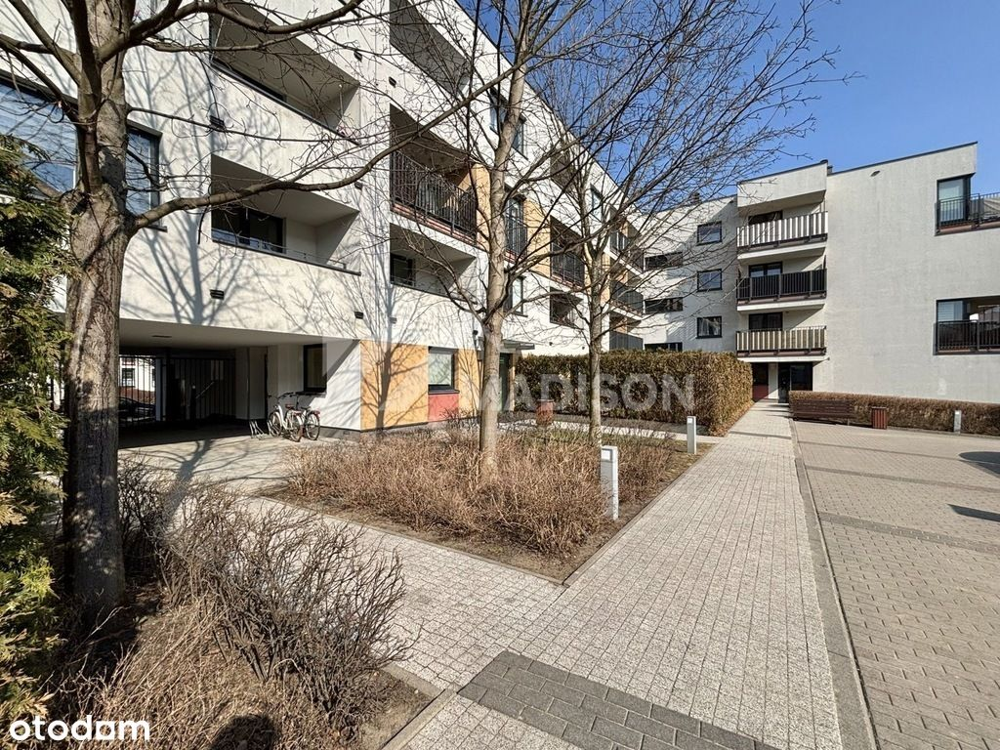
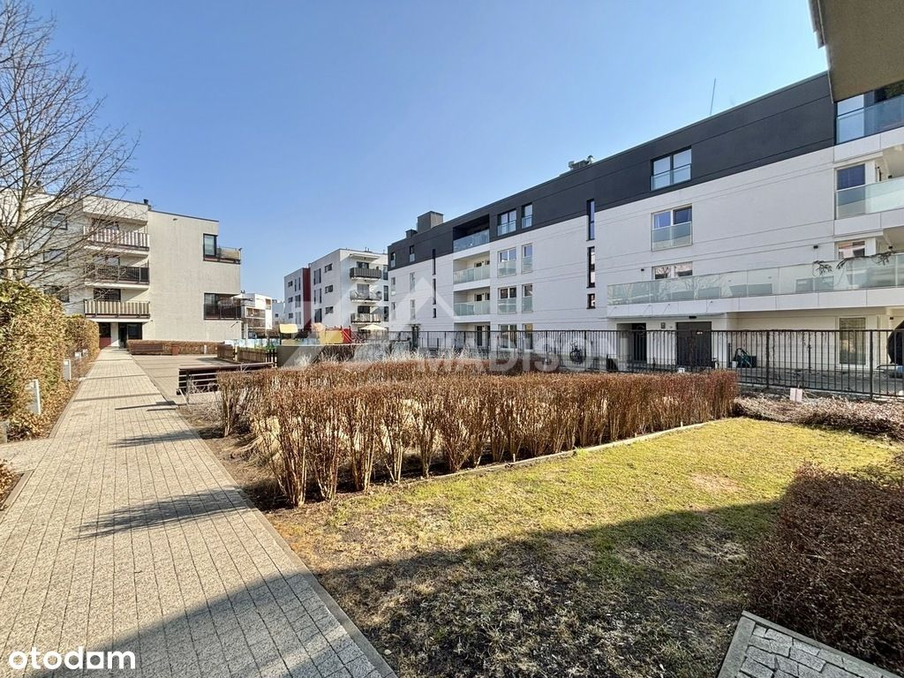